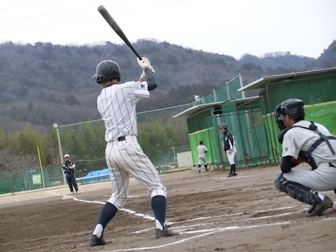
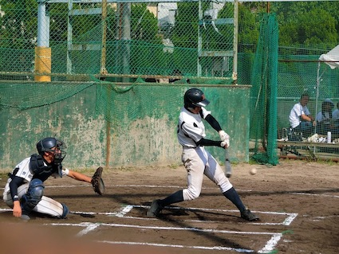
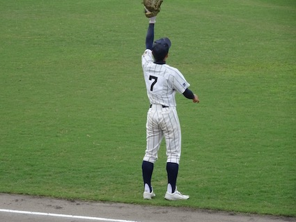

<body bgcolor="#10100E" text="#cccccc"></body>
<font face="serif">
<h1>Baseball</h1>
僕は小学校2年生から高校3年生の時まで約12年間、野球をやっていました。
<p>野球を通じて得たもの。それは「仲間の大切さ」でした。いや、臭っ。</p>
<p>ただ純粋に、12年間楽しかったですね。</p>
<a></a>
高校野球時代（１）
<br>
<a></a>
高校野球時代（２）
<br>
<a></a>
高校野球時代（３）
</font>